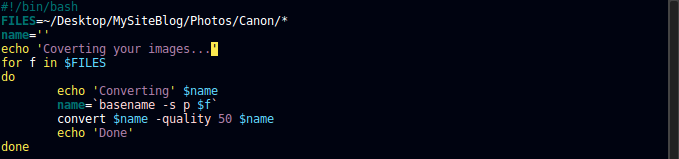
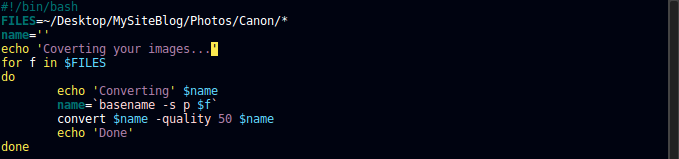
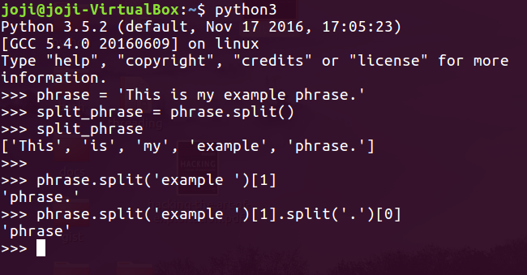
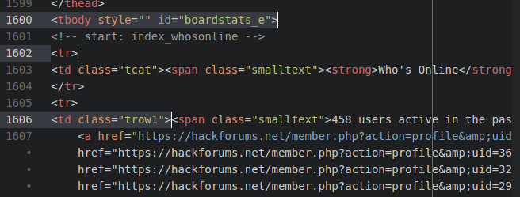
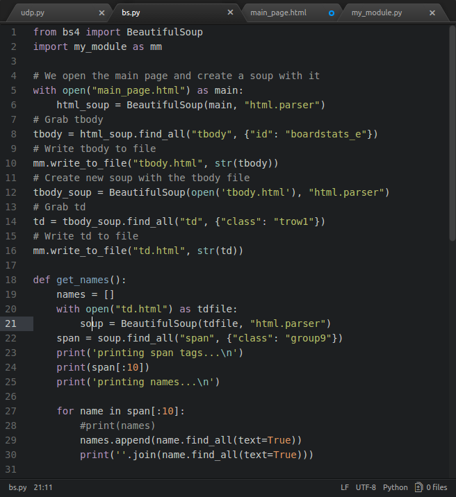
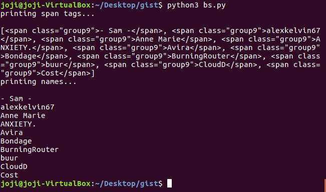
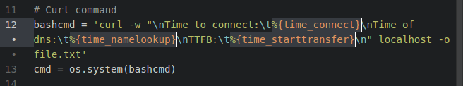
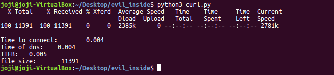

Bash script to resize images
So I had to do this script because I needed to resize my Pictures to reduze load times on the Photolio and to save alot of work. I used basename to grab the names of the images and convert to resize them.
Images may take a while to load, hold on!
So I had to do this script because I needed to resize my Pictures to reduze load times on the Photolio and to save alot of work. I used basename to grab the names of the images and convert to resize them.
I'm learning about curl. Very powerful tool. I'm also going to talk about split and BeautifulSoup. Let's start with split.
In this example, I start with a simple string, and what split can do to that string is, as the name says, split it. And you can do so simply but using .split() as I did in the beginning. But we can take this one step further. So let's say we want to grab whatever is in front of 'example'. We can do so buy spliting 'example' of the string and picking whats in front of it, hence the [1]. And that would be it. Now let's pick just the word phrase 'phrase'. Like previously, we get whats in front of 'example' but now we split twice. The last split is to remove the '.'
This gets very useful when parsing specific text in a html page as we will see soon. So let's talk about BeautifulSoup. To use this you need to install the bs4 module. For this example i used the main page of Hack Forums and grabed the names of online users.
This code uses bs4 to grab specific tags like tbody and td. Also find_all() allows us to grab tags with a certain class. Bs4 does much, much more. In the end we use text=True to grab our names. We could have used split.
 Running our code we can see the span tags and the final result the names. All of this output is done by our get_names() function.
So, what is curl? If we look at our man pages we get a pretty straight answser. Curl is a tool to transfer data from or to a server, using several protocols like HTTP FTP IMAP and many others. Curl offers proxy support, user authentication, SSL connections, cookies etc. Let's write a small script to get timings of connections. For this I'm running apache2 on localhost. Very easy to setup POST SCRIPT
 To be updated...